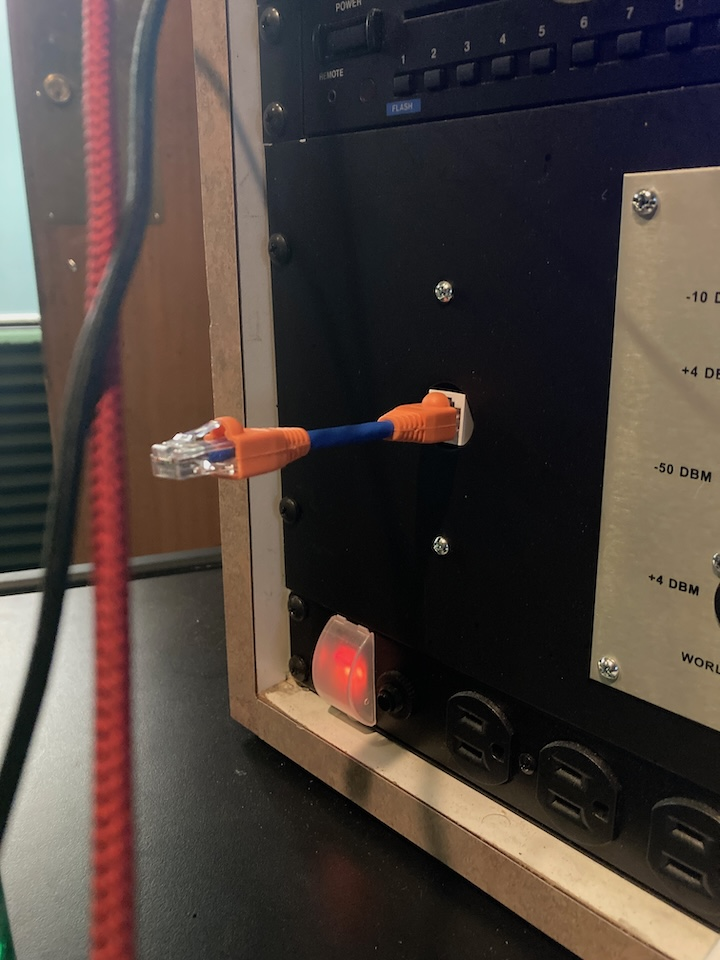
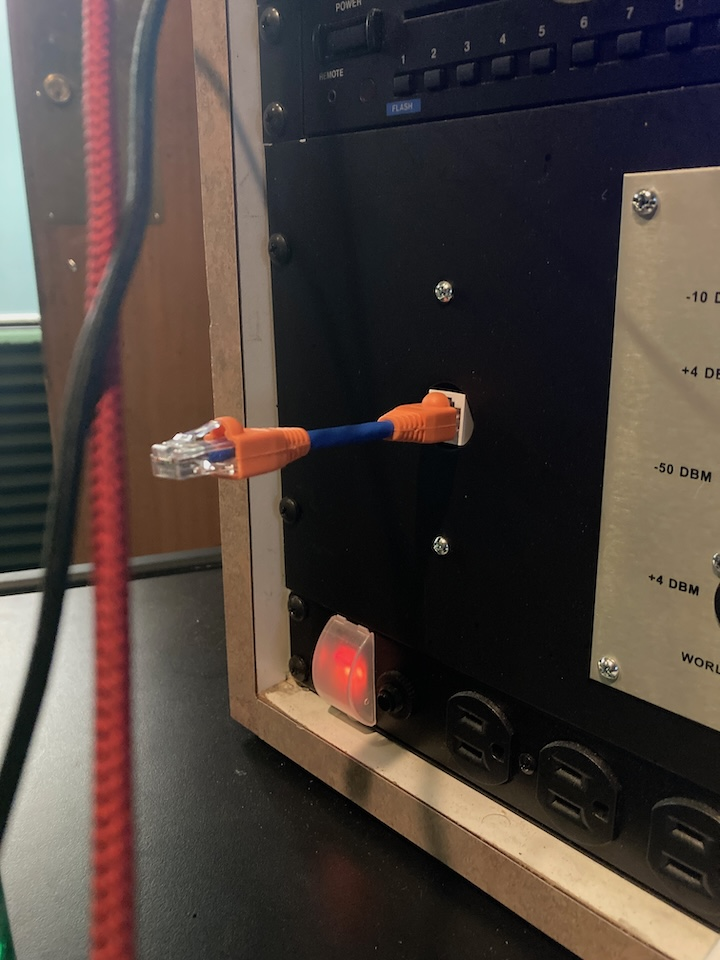

Title: 4 1/4 in. Petite UTP Convertible Cables, 2024
Year: 2024
Medium: CAT6 Ethernet cable and boot caps.
Dimension: 4 1/4 inches
Petite UTP Convertible Cables are a new type of Ethernet cable.
Most ethernet cables are long - petite UTP's are short. Who cares?
Shorter cable = Faster speeds.
Petite UTP cables are continually placed at sites wherever there is a vacant ethernet port.

 
